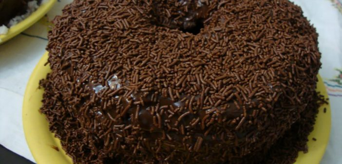

<https>
<title>Receita de Bolo de Chocolote</title>
<body background ="fundo2.jpg" link="#FF4500" vlink="#8B0000">

<center><font color="#8B0000" face="comic sans ms"><u><h1>Receita de Bolo de Chocolote</h1></u></font>

</center>

<font color="#CD853F" size="4" face="comic sans ms"><h1>Igredientes:</h1></font>

<font color="#CD853F" size="5" face="comic sans ms"><h2>Massa:</h2></font>

<font color="#A0522D" size="4" face="comic sans ms"><ul>
<li>3 copos de trigo</li>
<li>1 copo de água quente</li>
<li>1 colher de sopa de fermento em pó</li>
<li>2 copos de açúcar</li>
<li>1 copo de chocolate em pó</li>
<li>1 copo de óleo</li>
<li>3 ovos</li>
</ul></font>

<font color="#CD853F" size="5" face="comic sans ms"><h2>Cobertura:</h2></font>

<font color="#A0522D" size="4" face="comic sans ms"><ul>
<li>3 colheres de margarina</li>
<li>4 colheres de chocolate em pó</li>
<li>4 colheres de açúcar</li>
<li>3 xícaras de leite</li>
</ul></font>

<font color="#CD853F" size="5" face="comic sans ms"><h2>modo de Preparo da massa:</h2></font>

<font color="#A0522D" size="4" face="comic sans ms"><ol>
<li>Em uma tigela misturar o açúcar e o chocolate em pó</li>
<li>Em seguida, misturar as gemas e o óleo</li>
<li>Aos poucos acrescentar a água e o trigo</li>
<li>Em seguida juntar o fermento e por fim juntar as claras em neve</li>
<li>Despejar numa forma untada e colocar para assar por aproximadamente 40 minutos</li></ol>

<font color="#CD853F" size="5" face="comic sans ms"><h2>modo de Preparo da cobertura:</h2></font>

<font color="#A0522D" size="4" face="comic sans ms"><ol>
<li>Misturar tudo numa panela, em fogo baixo</li>
<li>Não parar de mexer até ficar cremoso</li>
<li>Depois despejar em cima do bolo ainda quente</li>
<li>Servir</li>

<table border="0" align="center" width="50%"><!--inicio da tabela border é a borda-->
<tr><!--abro linha-->

<td><a href="Receita1.html"> <center>Receita de Miojo</center></a></td><!--identicidação de celula-->

<td><a href="Receita3.html"> <center>Receita de Pudim de Leite</center></a></td>

<td><a href="index.html"> <center>Wome</center></a></td>

</tr><!--fecho linha-->
</table><!--fim da tabela-->

</ol></font>
</body>
</https>
